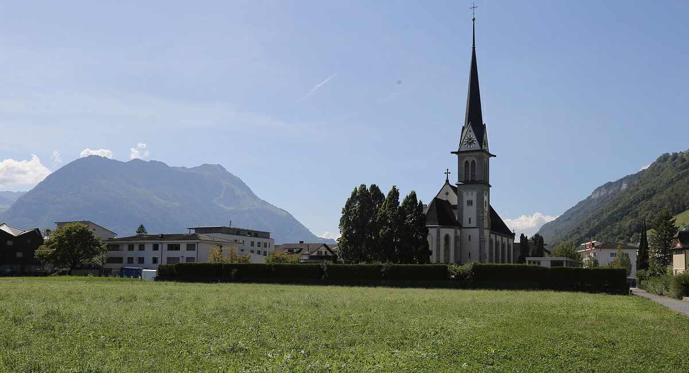

스위스 에네트뷔르겐, 민간 태양광 3곳·공공 1곳 묶은 지역 전기공동체…11월부터 공공건물 12곳에 동네 햇빛 전기

니트발덴 전력공사와 주 첫 사례, 연간 약 9만kWh 공급…공동체가 값 직접 정해 생산자에 kWh당 8라펜, 구매가 19.67라펜
스위스 니트발덴주 에네트뷔르겐 게마인데(기초자치단체)가 민간 태양광 3곳과 게마인데 소유 태양광 1곳을 한데 묶은 '지역 전기공동체'를 꾸려 11월부터 게마인데 건물 12곳에 동네에서 만든 햇빛 전기를 쓴다. 공동체는 니트발덴 전력공사(EWN)와 함께 만들며, 게마인데 평의회(Gemeinderat)가 6월에 설립을 결정했다. 공동체가 공급할 12개 건물의 연간 사용량은 모두 약 9만kWh이고, 당분간 게마인데가 주된 구매자이지만 관심 있는 누구나 참여할 수 있다. 전기값은 공동체가 스스로 정해, 태양광 생산자는 망에 보낸 전기에 kWh당 8라펜을 받고 구매자는 망 사용료와 부담금을 포함해 kWh당 19.67라펜을 낸다(1라펜은 0.01스위스프랑). EWN은 전력망을 내주고 기술·행정 처리를 맡으며, 올해 초부터 이 모델을 제공해 왔는데 에네트뷔르겐이 니트발덴주에서 처음으로 이를 택했다.
시민에너지 관점
민간 태양광 3곳의 전기를 게마인데가 동네 값으로 사 주면, 시민 발전소는 멀리 있는 도매시장 대신 바로 옆 공공건물이라는 확실한 판로를 얻는다. 독일 브란덴부르크의 펠트하임 마을은 주민과 함께 자체 배전망을 깔아 인근 풍력단지 전기를 마을 안에서 직접 쓰는 길을 열었다. 전력망을 따로 깔지 않으면 지역 거래는 어렵다는 우려가 있지만, 에네트뷔르겐처럼 기존 전력회사가 망과 정산을 맡고 공동체는 값만 스스로 정하는 방식이면 새 전선 없이도 가능하다. 우리도 지자체가 공공건물 전기를 주민 발전소에서 먼저 사는 지역 거래 제도를 열고, 한국전력이 망과 정산을 맡는 길을 법으로 마련해야 한다.
출처: Nau.ch 2026-10-27 Keystone-SDA Regional 원문 보기
スイス・エネトビュルゲン、民間太陽光3か所と公共1か所を束ねた地域電力共同体…11月から公共施設12か所に地元の太陽の電気
ニトヴァルデン電力公社と組む州内初の事例、年間約9万kWhを供給…共同体が自ら価格を決め、生産者にkWhあたり8ラッペン、購入価格19.67ラッペン
スイス・ニトヴァルデン州のエネトビュルゲン村（基礎自治体ゲマインデ）が、民間の太陽光3か所と村所有の太陽光1か所を束ねた「地域電力共同体」をつくり、11月から村の施設12か所で地元でつくった太陽光の電気を使う。共同体はニトヴァルデン電力公社（EWN）と共に設立し、村の行政評議会（Gemeinderat）が6月に設立を決めた。共同体が供給する12施設の年間使用量は合計約9万kWhで、当面は村が主な買い手となるが、関心のある人は誰でも参加できる。電気料金は共同体が自ら決め、太陽光の生産者は送電した電気にkWhあたり8ラッペンを受け取り、購入者は託送料と賦課金を含めkWhあたり19.67ラッペンを支払う（1ラッペンは0.01スイスフラン）。EWNは電力網を提供して技術・事務処理を担い、今年初めからこのモデルを提供してきたが、ニトヴァルデン州で採用したのはエネトビュルゲンが初めてだ。
市民エネルギーの視点
民間太陽光3か所の電気を村が地元の価格で買えば、市民発電所は遠くの卸売市場ではなく、すぐ隣の公共施設という確かな販路を得る。ドイツ・ブランデンブルク州のフェルトハイム村は、住民と共に独自の配電網を敷き、近くの風力発電所の電気を村の中で直接使う道を開いた。電力網を別に敷かなければ地域取引は難しいとの懸念もあるが、エネトビュルゲンのように既存の電力会社が網と精算を担い、共同体は価格だけを自ら決める方式なら、新たな電線なしでも実現できる。韓国でも自治体が公共施設の電気を住民発電所からまず買う地域取引の制度を開き、韓国電力が網と精算を担う道を法律で整えるべきだ。
出典: Nau.ch 2026-10-27 Keystone-SDA Regional 原文を読む
瑞士恩内特比尔根把3处民间光伏和1处公共光伏组成地方电力共同体…11月起12栋公共建筑用上本地阳光电力
与尼德瓦尔登电力公司合作，为该州首例，年供电约9万千瓦时…共同体自行定价，向发电方支付每千瓦时8拉彭，购电价19.67拉彭
瑞士尼德瓦尔登州恩内特比尔根市镇（基层自治体Gemeinde）把3处民间光伏和1处镇属光伏组成"地方电力共同体"，从11月起让12栋镇属建筑使用本地生产的太阳能电力。该共同体与尼德瓦尔登电力公司（EWN）共同组建，镇行政委员会（Gemeinderat）已于6月决定设立。共同体供电的12栋建筑年用电量合计约9万千瓦时，目前镇政府是主要买方，但任何有兴趣的人都可以加入。电价由共同体自行决定：光伏发电方每向电网送出1千瓦时可得8拉彭，购电方含电网使用费和附加费每千瓦时支付19.67拉彭（1拉彭等于0.01瑞士法郎）。EWN提供电网并负责技术和行政处理，今年初起推出这一模式，恩内特比尔根是尼德瓦尔登州第一个采用的市镇。
市民能源视角
镇政府以本地价格购买3处民间光伏的电力，市民电站就不必依赖遥远的批发市场，而是在隔壁的公共建筑找到可靠的销路。德国勃兰登堡州的费尔德海姆村与居民一起铺设了自己的配电网，开辟了在村内直接使用附近风电场电力的道路。有人担心不另建电网就难以开展本地交易，但像恩内特比尔根这样由现有电力公司负责电网和结算、共同体只自行定价，不拉新电线也能做到。韩国也应建立地方政府优先向居民电站购买公共建筑用电的本地交易制度，并通过立法让韩国电力公社承担电网和结算。
来源: Nau.ch 2026-10-27 Keystone-SDA Regional 查看原文
Swiss municipality of Ennetbürgen links three private solar plants and one public plant in a local electricity community, supplying 12 public buildings from November
First case in the canton of Nidwalden, set up with utility EWN to cover about 90,000kWh a year; the community sets its own prices, paying producers 8 rappen per kWh and charging 19.67 rappen
The municipality of Ennetbürgen in the Swiss canton of Nidwalden has formed a local electricity community that links three private solar installations with one municipally owned plant, and from November it will run 12 municipal buildings on solar power produced in the village. The community is being set up with the cantonal utility Elektrizitätswerk Nidwalden (EWN), after the municipal council decided in June to found it. The 12 buildings use about 90,000kWh a year in total, and while the municipality will be the main buyer for now, the community is open to anyone interested. The community sets its own prices: solar producers receive 8 rappen per kWh for the power they feed in, and buyers pay 19.67 rappen per kWh including grid fees and levies (one rappen is 0.01 Swiss franc). EWN provides the grid and handles technical and administrative work; it has offered the model since the start of the year, and Ennetbürgen is the first municipality in Nidwalden to take it up.
Citizen Energy View
When the municipality buys power from three private solar plants at a local price, citizen generators gain a reliable outlet in the public buildings next door instead of a distant wholesale market. In Brandenburg, Germany, the village of Feldheim worked with its residents to lay its own distribution grid, opening the way to use power from a nearby wind farm directly within the village. Some worry that local trading is impossible without a separate grid, but as Ennetbürgen shows, it can work with no new wires when the existing utility handles the grid and settlement and the community simply sets its own prices. Korea, too, should create a local trading system in which local governments buy public-building power first from residents' generators, and legislate a role for KEPCO in handling the grid and settlement.
Source: Nau.ch 2026-10-27 Keystone-SDA Regional Read the original